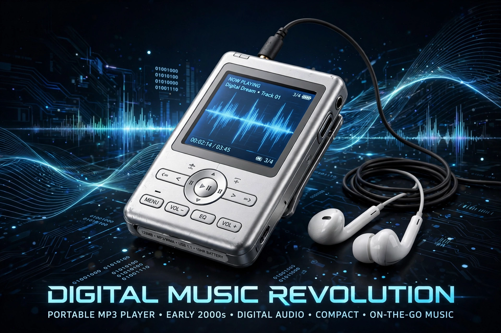

| Filename extension | .mp3 |
|---|---|
| Developed by | Fraunhofer IIS, Karlheinz Brandenburg et al.; ISO/IEC MPEG |
| Initial release | 1993 (standardised as MPEG-1 Audio Layer III) |
| Type | Lossy audio coding format |
MP3, formally MPEG-1 Audio Layer III or MPEG-2 Audio Layer III, is a coding format for digital audio developed largely by the Fraunhofer Society in Germany. It uses lossy data compression based on psychoacoustic models, discarding sounds less audible to humans.
Standardised in 1993, MP3 files spread widely over the internet in the late 1990s via software such as Winamp and file-sharing service Napster, transforming music distribution and provoking major copyright disputes. Portable MP3 players preceded and included Apple's iPod (2001). Typical bit rates are 128–320 kbit/s, giving roughly tenfold compression versus CD audio.
Patents expired in 2017. MP3 has been largely superseded for streaming by AAC, Opus and others, but remains universally supported.